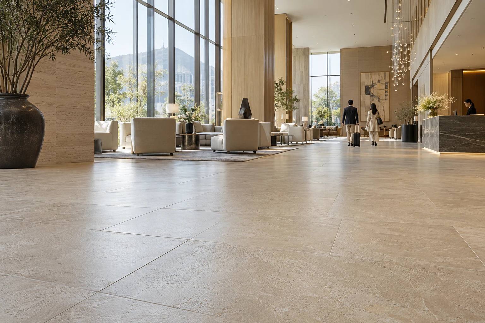

적용공간
미끄러짐은 순간,
피해는 오래 남을 수 있습니다.
고객의 부상, 직원의 작업 중 사고, 가족의 욕실 낙상.
사람이 오가는 바닥의 미끄러움부터 개선하세요.

01 · 식당 / 주방뜨거운 음식을 들고
뜨거운 음식을 들고
미끄러진다면?
양손에 음식과 식기를 든 직원은 바닥을 계속 살피기 어렵습니다. 조리·세척·배식 동선의 미끄러움을 줄이는 시공입니다.

02 · 호텔 / 수영시설쉬러 온 고객이
쉬러 온 고객이
다쳐서 돌아가지 않도록.
빗물이 들어오는 로비와 맨발로 걷는 수영장 통로. 고객의 미끄러짐을 줄이고, 바닥의 외관은 샘플로 먼저 확인합니다.

03 · 관공서 / 기업직원도 방문객도,
직원도 방문객도,
이 바닥을 지납니다.
비 오는 날의 출입구, 청소 후 화장실, 많은 사람이 지나는 로비. 기업·기관·학교의 공용 바닥을 개선합니다.

04 · 가정 욕실부모님 댁 욕실,
부모님 댁 욕실,
미끄럽지는 않나요?
샤워 후 돌아서는 순간, 세면대 앞에서 옮기는 한 걸음. 매일 쓰는 욕실의 미끄러움을 줄이고, 작은 구역에서 먼저 확인합니다.
사진은 공간의 이용 상황을 설명하기 위한 브랜드 이미지입니다.